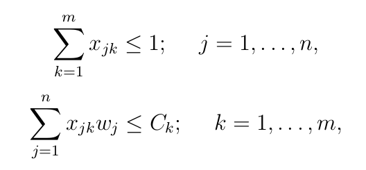
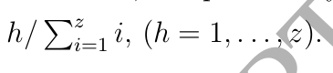
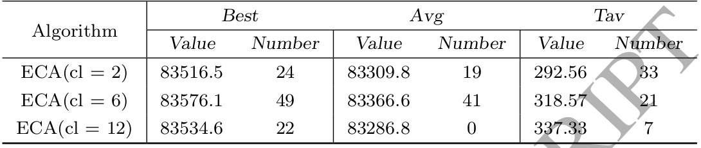
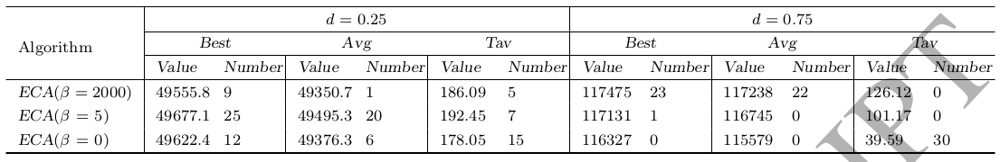

QMKP
Quadratic Multiple Knapsack Problem
Apresentação criada por Mateus Cordeiro
Definição do Problema
O QMKP é uma extenção do clássico problema da mochila, modificado em 2 principais aspectos:
- Multiple: Várias mochilas com capacidades independentes
- Quadratic: Valores associados aos pares de itens
Definição do Problema
Objetivo
Maximizar a soma dos valores individuais e dos pares, sem exceder a capacidade de nenhuma das mochilas.
Definição Formal
- Conjunto de n itens: N = {1, ..., n}
- Conjunto de m mochilas: M = {1, ..., m}
- Cada item i E N tem valor Vi e peso Wi
- Cada par de itens i E N e j E N (i != j) tem valor Vij
- Cada mochila k E M tem capacidade Ck
Definição Formal
Considerando que Xik será 1 se o objeto i estiver dentro da mochila k e 0 caso contrário, o objetivo é maximizar o valor de Vsum

Condições básicas
Aplicações
- Alocação de equipes de trabalho para projetos, onde é possível definir os orçamentos dos projetos e a produtividade dos colaboradores.
- Alocação de investimentos financeiros
An Ejection Chain Approach for the Quadratic Multiple Knapsack Problem
Bo Peng, Mengqi Liu, Zhipeng Lü, Gary Kochengber, Haibo WangEjection Chain (Cadeia de Ejeção)
Os autores do artigo definem ejection chain como uma sequência de movimentos de uma solução para outra iniciando pela remoção de um item da solução inicial.
Extenção de uma simples busca local para definir movimentos mais promissores
Ejection Chain Approach (ECA)
- Construção de solução inicial
- Busca local por ejection chain
- Perturbação adaptiva
Primeiramente um algoritmo construtivo guloso gera uma solução inicial promissora.
Alternância entre fase de busca local por ejection chain e fase de perturbação.
Obtenção de um bom balanceamento entre intensificação e diversificação.
Construção de solução inicial
Heurística construtiva gulosa que se baseia na densidade relativa de adição de um item a uma mochila.

Construção de solução inicial
Construção de forma iterativa da solução inicial com atualização das densidades a cada iteração.
Busca local por ejection chain
- Algoritmo de busca local fisrt-improvement
- Formação de cadeia de ejeção
- ejection moves
- trial moves
Movimentos de ejeção
- Remoção de item da mochila
Gera uma estrutura de referência
- Mudar um item de uma mochila para outra
Formação de efeito de cadeia
Movimentos "trial"
Transforma uma estrutura de referência em uma solução completa, adicionando objeto livre a mochila.
Perturbação adaptiva
- Mudança de visinhança
- Diversificação
- Estratégias iterativas:
- Gulosa
- Gulosa e randômica
Estratégia Gulosa
Baseia na densidade de forma similar a construção da solução inicial para a ECA.
Estratégia Gulosa e randômica
A cada iteração os Z melhores movimentos também baseados na densidade D(i, k) são ordenados de forma não decrescente, a probalibilidade de h-ésimo par (item, mochila) ser escolhido é:
Desempenho computacional
Outros algoritmos
- ABC: artificial bee colony - Sundar e Singh
Baseado na troca de objetos sem mochila com objetos já em alguma mochila.
- TIG: iterated greedy algorithm - García Martínez
- SO: strategic oscillation - García Martínez
Exploração de soluções em regiões factíveis ou não.
Resultados
Das 60 instâncias
- ECA supera os melhores resultados conhecidos em 34
- 18 - d = 0.25
- 16 - d = 0.75
- ECA encontra resultados piores que os conhecidos em apenas 6
Parâmetro cl
Parâmetro B
Melhorias
- Busca tabu para melhorar fase de busca local por ejection chain
- Novas operadores e estratégias de perturbação